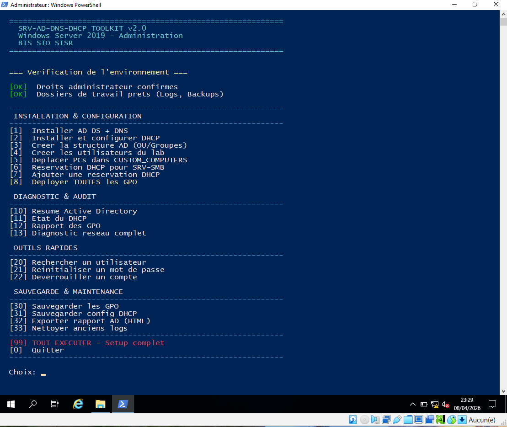
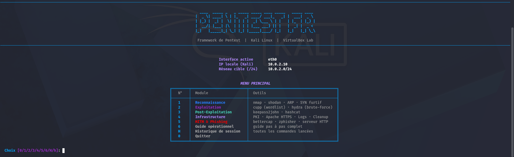

Missions classées par compétence et contexte.
Les fiches de missions seront ajoutées ici prochainement.
Toolkit PowerShell modulaire automatisant le déploiement complet d'une infrastructure Windows Server : Active Directory, DNS, DHCP, GPO, diagnostic réseau, sauvegarde et outils d'administration — le tout piloté depuis un menu interactif.

Framework Python modulaire pilotant un pentest complet en environnement VirtualBox : reconnaissance réseau, exploitation par brute-force, post-exploitation KeePass, phishing MITM avec certificats HTTPS, dashboard de logs et nettoyage automatique des artefacts.
